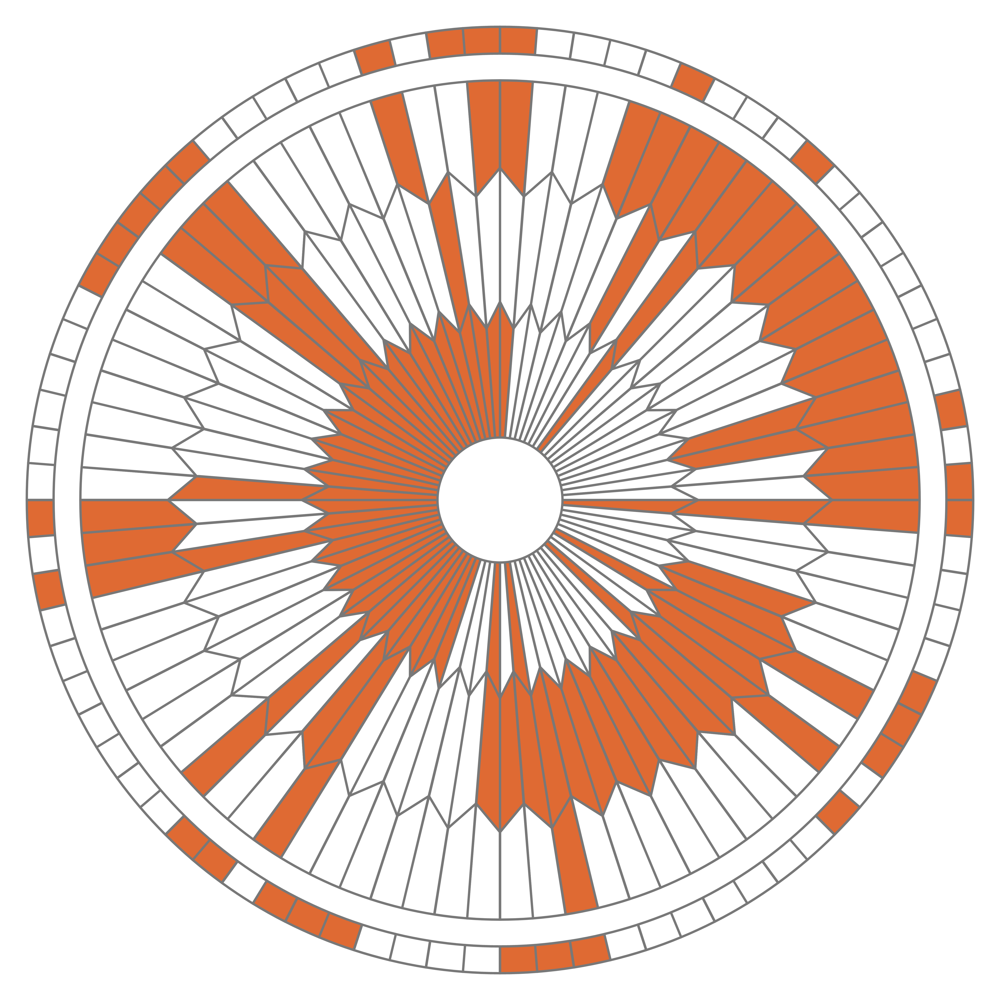

C2 Représentation des entiers et des caractères
Activités
 Activité 1 : Numération binaire
Activité 1 : Numération binaire
Activité 2 : Numération hexadécimale
Activité 3 : Encodage des caractères
En utilisant la video ci-dessus et en faisant éventuellement vos propres recherches sur le Web, répondre brièvement aux questions suivantes :
- L'encodage ascii
- Combien de caractères pouvaient être codés en ascii ?
- Expliquer rapidement pourquoi ce système était limité et à du être étendu
- L'encodage Latin-1
- Sur combien de bits était encodé chaque caractère ?
- Combien de caractères au maximum étaient représentés ?
- Ce système était-il universel ?
- L'encodage utf-8
- Un caractère est-il toujours encodé sur le même nombre de bits ?
- Cet encodage est-il compatible avec l'ancienne norme ascii ?
Cours
Vous pouvez télécharger une copie au format pdf du diaporama de synthèse de cours présenté en classe :
Attention
Ce diaporama ne vous donne que quelques points de repères lors de vos révisions. Il devrait être complété par la relecture attentive de vos propres notes de cours et par une révision approfondie des exercices.
QCM
1. Quelle est l'écriture en base 2 du nombre \((154)_{10}\) ?
- a) 10011100
- b) 10011001
- c) 00011010
- d) 10011010
- a)
10011100 - b)
10011001 - c)
00011010 - d) 10011010
2. Que peut-on dire de l'écriture en base 2 d'un nombre divisible par 2 ?
- a) Elle ne contient pas de 0
- b) Elle se termine par 0
- c) Elle ne contient qu'un seul 1
- d) Elle contient deux 1
- a)
Elle ne contient pas de 0 - b) Elle se termine par 0
- c)
Elle ne contient qu'un seul 1 - d)
Elle contient deux 1
3. Quelle est l'écriture en base 10 du nombre \((01101100)_{2}\) ?
- a) 216
- b) 108
- c) 54
- d) 4
- a)
216 - b) 108
- c)
54 - d)
4
4. Quelle est l'écriture en base 16 du nombre \((165)_{10}\) ?
- a) 95
- b) A5
- c) B5
- d) C5
- a)
95 - b) A5
- c)
B5 - d)
C5
5. En base 12, combien il y a-t-il de chiffres ?
- a) 10
- b) 11
- c) 12
- d) 13
- a)
10 - b)
11 - c) 12
- d)
13
6. Si l'écriture en base 2 d'un nombre ne comporte qu'un seul 1, alors ce nombre :
- a) n'est pas une puissance 2
- b) est une puissance de 2
- c) est divisible par 2
- d) n'est pas divisible par 2
- a)
n'est pas une puissance 2 - b) est une puissance de 2
- c)
est divisible par 2 - d)
n'est pas divisible par 2
7. Quelle est l'écriture en base 10 du nombre \((B2)_{16}\) ?
- a) 112
- b) 162
- c) 178
- d) 194
- a)
112 - b)
162 - c) 178
- d)
194
8. Pour écrire les nombres entre 1 et 100 en base 2, on a besoin au maximum de :
- a) 5 chiffres
- b) 6 chiffres
- c) 7 chiffres
- d) 8 chiffres
- a)
5 chiffres - b)
6 chiffres - c) 7 chiffres
- d)
8 chiffres
9. Quelle est l'affirmation exacte ?
- a) Le codage UTF-8 est sur 7 bits.
- b) Le codage UTF-8 est sur 1 octet.
- c) Le codage UTF-8 est sur 1 à 4 octets.
- d) Le codage UTF-8 est sur 4 octets.
- a)
Le codage UTF-8 est sur 7 bits. - b)
Le codage UTF-8 est sur 1 octet. - c) Le codage UTF-8 est sur 1 à 4 octets.
- d)
Le codage UTF-8 est sur 4 octets.
Exercices
Exercice 1 : Passer d'une base à l'autre
Recopier et compléter le tableau de conversion suivant :
| Ecriture décimale | Ecriture binaire | Ecriture hexadécimale |
|---|---|---|
| \((201)_{10}\) | ... | ... |
| ... | ... | \((EA)_{16}\) |
| \((57)_{10}\) | ... | ... |
| \((00100001)_2\) | ||
| \((128)_{10}\) | ... | ... |
| \((163)_{10}\) | ... | ... |
| ... | ... | \((5B)_{16}\) |
| ... | \((10010101)_2\) | ... |
| ... | \((10010010)_2\) | ... |
Exercice 2 : Un peu de reflexion
- Quel est le plus grand entier positif écrit en utilisant 10 chiffres en base 2 ?
- Que peut-on dire d'un nombre dont l'écriture en base 2 ne contient qu'un seul chiffre 1 ?
-
- En base 10, comment reconnaît-on un nombre divisible par 10 ?
- L'écriture en base 2 d'un nombre divisible par 2 se termine forcément par quel chiffre ? Justifier.
- De façon générale, soit \(b\) un entier supérieur ou égal à 2, que peut-on dire de l'écriture en base \(b\) d'un nombre divisible par \(b\) .
- En base 10, un million s'écrit avec 7 chiffres, combien en faut-il pour l'écrire en base 2 ?
Exercice 3 : Énigme
Il manque des chiffres (remplacés par des ?) dans le nombre binaire suivant : \(?001??111?\)
- Retrouver les chiffres manquants en utilisant les indices suivants:
- il n'y a pas de zéros non significatifs dans ce nombre
- ce nombre est divisible par 2
- il y a un nombre impair de 0 dans l'écriture binaire de ce nombre
- l'écriture décimale de ce nombre dépasse \((600)_{10}\)
- Donner l'écriture décimale de ce nombre.
- Donner son écriture hexadécimale
Exercice 4 : Un peu de Python
- Lancer Python en ligne de commande, comme vu dans le chapitre précédent.
- Tester la fonction
binde Python, en affichant par exemplebin(201)etbin(57). Rapprocher les résultats obtenus avec les réponses de l'exercice 1. Émettre une hypothèse sur cette fonction. - Valider votre hypothèse en faisant afficher l'aide de la fonction
bin. - Reprendre les questions précédentes pour la fonction
hex.
Exercice 5 : Code ASCII
- Le code ascii de A est 65 et celui de a est 97. Ecrire ces deux codes en binaire.
- Sachant que l'ordre des codes suit l'ordre alphabétique (donc le code de B est 66), écrire les codes binaires de B et de b.
- Même question pour C et c. Que remarquez-vous ?
- Le code ascii binaire de P est \(10100000\), quel est celui de p ?
- Le code ascii du zéro est 48, l'écrire en binaire. Ce code a-t-il été choisi au hasard ?
Exercice 6 : Message secret
0x420x720x610x760x6f0x200x210x200x560x6f0x750x730x200x610x760x650x7a0x200x64
0xe90x630x6f0x640xe90x200x6c0x650x200x6d0x650x730x730x610x670x65
Aide
Un indice : ascii
Exercice 7 : Algorithme des divisions successives
En utilisant l'algorithme des divisions successives :
- Convertir \(6771_{10}\) en base 2
- Convertir \(6771_{10}\) en base 16
- Vérifier le résultat précédent en effectuant la conversion du nombre obtenu à la question 1. en base 16.
- Mêmes questions pour \(9753\)
Aide
Cet exercice impose l'utilisation de l'algorithme des divisions successives, on pourra donc se référer au cours et refaire les exemples qui s'y trouvent en cas de difficultés.
Exercice 8 : Le parachute de perseverance
En février 2021, le robot Perseverance a atterrit sur Mars, en déployant un parachute : Le motif du parachute cache un message codé en binaire, le décoder en utilisant les informations suivantes :
- Un mot est codé sur chacun des trois anneaux intérieurs
- les caractères sont représentés sur 10 bits
- La lettre A est codée 1, la lettre B est codée 2 et ainsi de suite
- l'anneau extérieur code des coordonnées gps de la forme trois groupes de chiffres suivi d'une lettre (N ou S) puis de nouveau 3 groupes de chiffres suivi d'une lettre (E ou W)

Pour aller plus loin
- Visiter le site Msg2Mars pour coder votre propre message en suivant le même principe
- Le service Nominatim d'openstreetmap vous permettra de retrouver un lieu à partir de ces coordonnées gps